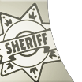

Sheriff
Der Sheriff muss alle Outlaws und den oder die Kopfgeldjäger ausschalten, um für Recht und Ordnung zu sorgen. Der Sheriff beginnt das Spiel mit einem zusätzlichen Lebenspunkt und ist immer als Erster an der Reihe. Er kann nicht ins Gefängnis geschickt werden.
Hilfssheriff
Die Hilfssheriffs helfen dem Sheriff und beschützen ihn um jeden Preis, denn sie haben dasselbe Ziel! Wenn der Sheriff gewinnt, gewinnen auch die Hilfssheriffs, sogar wenn sie zuvor ausgeschaltet wurden.
Outlaw
Outlaws wollen den Sheriff ausschalten, aber sie haben auch keine Skrupel sich gegenseitig für Belohnungen umzunieten! Es gewinnen jedoch alle Outlaws (auch die zuvor ausgeschalteten), wenn der Sheriff getötet wird.
Kopfgeldjäger
Der Kopfgeldjäger möchte der neue Sheriff werden. Er muss als Letzter im Spiel bleiben. Der Kopfgeldjäger muss also erst alle anderen Charaktere ausschalten und dann den Sheriff.